Given at Airflow Summit 2026, Austin, TX.
Abstract
Building an AI capability in Airflow is the easy part. The hard part is what comes next. You want to swap a model, refactor a prompt, cut token costs, or try a local model instead of paying for cloud. How do you know it still works as expected? Without a fast feedback loop, every change is a gamble. This talk shows practical patterns for building that feedback loop, with real examples using agent skills, MCPs, and local and cloud models. It covers the challenges too: sandboxing, observability, non-determinism, and keeping checks simple enough that people actually use them.
Takeaways
- Build executable checks for your loops, so you can delegate strongly.
- Find the right box: a task, a Dag, the whole Airflow image. Or bigger.
- You may not need the inference at all: AI all around your system, and workflows with none in them.
Evals are not security. If something must never happen, prevent it rather than evaluating it.
Video, Slides and Transcript
- Video on YouTube
- It Works! Now What?
- Transcript (WebVTT), an edited transcript timed to the video
The Talk in Article Form
If you’d rather read than watch, here’s the talk as an article. Each section links to its moment in the video (▶), and the dark panels are the deck’s own animations: click Next (or the diagram) to step through them.
Two worlds
You could sort me into two worlds. In the corporate world, I’m a software engineering lead at Amazon, for a team called Economic Decision Science, which optimizes the way the Amazon marketplace operates using economic models. My goal is to get economists to production without engineering or tech bottlenecks. In the other world, I’m an Airflow user. I run Linux, I run local models, and I run Airflow on my home server.
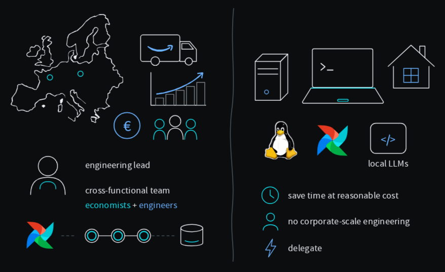
These two worlds may seem to have nothing in common, but there’s one very important thing they share. I want to delegate heavily, and so do the economists on my team. We do it through coding agents, not because we’ve been mandated to, but because they’ve been very effective for us.
A real problem
Our corporate Dags can look quite convoluted. We use dbt and Astronomer Cosmos to author them, with models depending on models and all that jazz. But if you really think about it, they all share a common pattern: something triggers them, there’s a question we need to answer, we interpret that answer, and we decide an outcome.
So I’m going to talk about a real problem that I have. I live in London, and in my neighborhood the bins get collected every week. It alternates between recycling and rubbish, and the food caddy thankfully gets collected every week. If I put out the wrong bin, or I forget, I end up holding a month of rubbish, because it’s the two weeks I already had plus two more. I don’t want that to happen, so I delegate.
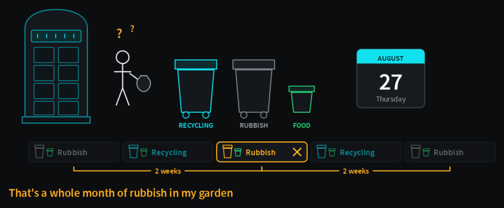
The agent figures it out
If I delegated to a friend, I’d give them instructions: go to the council website, type my postcode, pick the right address from the dropdown, read the date and the bin, and take out the right one on the right date. But I don’t want to burden my friend, so I burden Claude Opus 5, or whatever agent you want to pick. I just tell it to write a skill for this problem, and it’s good enough to figure it out. If you’re curious, it finds no dropdown, reads the JavaScript, finds the endpoints behind the form, and calls those to get the answer.
I know it’s the right answer because I had already checked it, so I have my ground truth. But look at the numbers: 85 cents, two minutes and about a million tokens per question. That would run me $4 a month, and I still have to trigger the skill myself, which means I still have to remember. The whole point was not having to remember. Also, the price is kind of ridiculous.
Fast iteration needs a cheap loop
So how do I go about changing it? People might start guessing at what needs to change: the prompts, the tools, the models. But the most important part is having a loop that looks a lot like a refactoring loop, one that lets you change a system, or parts of it, without changing its externally observable behavior. It’s safe to change because we have tests.
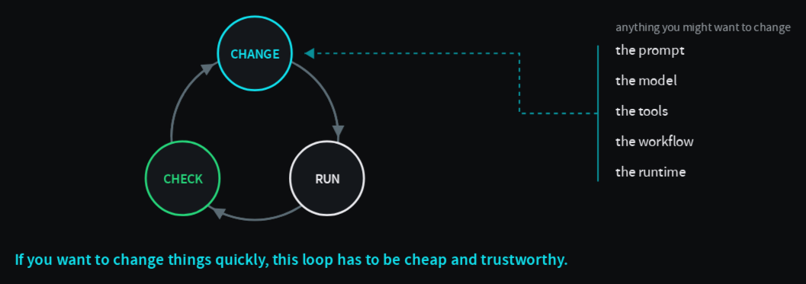
So the rule is: before we delegate, we build a check that tells us whether something is right or wrong. We can call that executable intent.
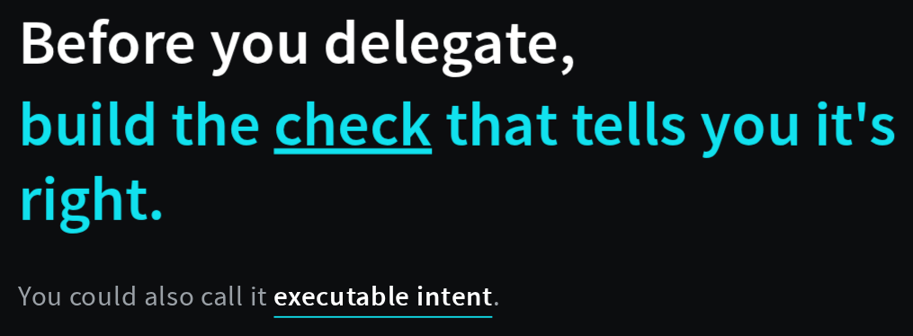
The smallest check
Here’s the check. A Pydantic model for the payload, a call to the agent against a specific recorded date I know about, and an assertion that the result matches what I expect. I use a set, so the order doesn’t matter.
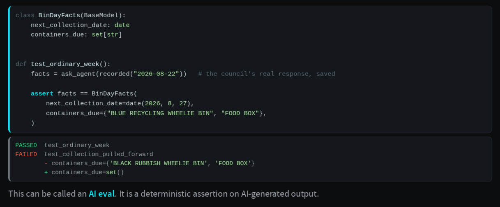
You may say this looks like a unit test, or more likely an integration test, because we’re calling outside things, and you’d be right. I’d say the correct term is an AI eval, because we’re asserting on the output of LLM inference. Whatever we call it, it’s what lets us change parts of our system safely.
From agent skill to Airflow Dag
So we take the agent skill, which only runs when a human runs it, and put it into Airflow, which is a great orchestrator. I made this change agentically too; I delegated it as well. Now it runs every day. The part that asks the agent keeps doing what it did before, and then Airflow decides whether to alert me. I only need to know the night before, so I use the Telegram provider that comes with Airflow.
What I find interesting is that I didn’t have to give the agent Telegram permissions. Just by using Airflow, I bounded the responsibilities of the different parts. I didn’t actually refactor, though, because the behavior changed, so I wrote new checks for the new parts: send when it’s due, log why when it isn’t, and don’t send twice.
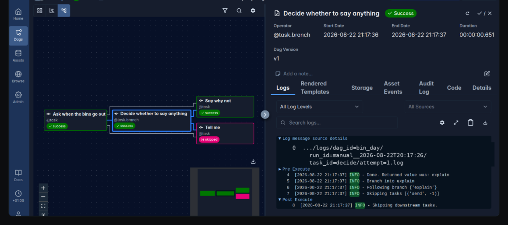
Change the model
We solved the problem of me having to remember. Can we improve on the price? Yes, because we have the check. We can swap the frontier model for a cheaper one, a mid-tier model, an open-weight model, or even better, a local open-weight model, so that no one knows when I have to take out the trash.
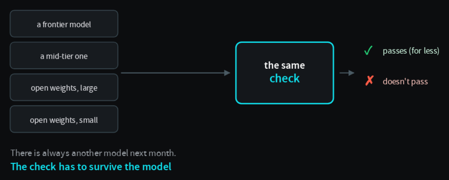
The check is what lets us benchmark these things, and the check survives the models. The models will come and go, and the check stays until we decide it’s no longer valid. I tested many open-weight models, and it turns out gpt-oss with 20 billion parameters was good enough. If I wanted speed over price, I could use Mistral Large.
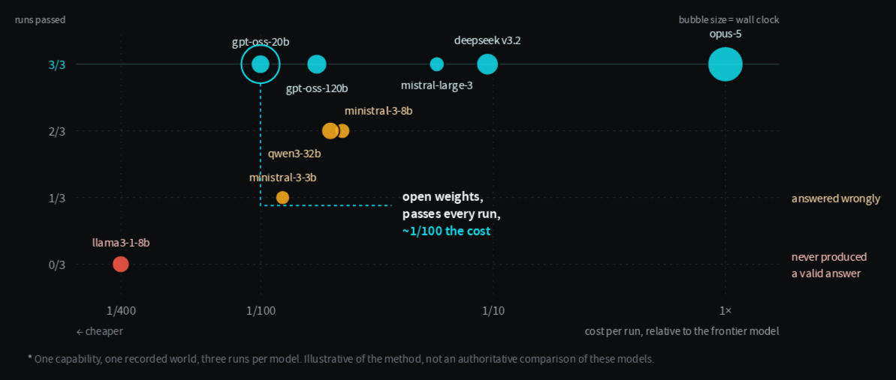
Making the loop faster
How long did this take? Not long at all, because I’m delegating all of it, and I make the loops fast. I don’t use an LLM as a judge by default, because it takes more time and adds stochasticity; here I had structured output, so I could assert on it directly. I made the runs independent, with no shared state, because if I had to lock state, it would become 40 sequential runs. And if you need isolation or containers, they have overhead, so tier them.
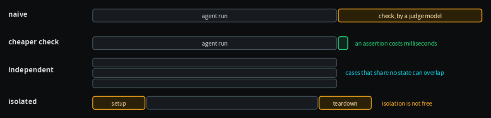
Move more out of inference
Look at the path so far. We had an agent skill, and the agent solved a lot at inference time. Then we moved to an Airflow Dag, and suddenly a lot of the behavior was encoded explicitly, with the agent left as a web scraper of sorts. Can we go further? The title spoils it, but yes: what I run at home doesn’t use AI at all. I use AI to change it, but it runs as a Python web scraper against the same checks.
What happens when the website changes? It’s going to break. But it hasn’t happened yet, and I’m not sure I want to pay for inference for a long time just in case. And if you’re getting the idea of feedback loops, the failure itself can start another loop, where an agent goes and changes the code until the checks pass again.
Find the loop, and define the box
So what do you need to find one of these loops? A goal worth pursuing, otherwise nobody spends the time or the tokens on it. Somewhere to experiment, where you can actually affect the outcome. A way to compare, like the checks or a baseline. And, very importantly, the levers you allow the agent to change: the prompt for prompt optimization, the model for benchmarking, or the tools and the workflow, like I did.
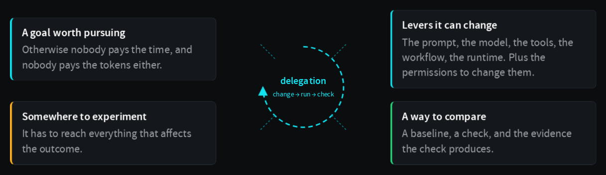
Some of you might say this is all great, but it’s a small demo, and your problems are large and distributed. Then make the box bigger. If you want to change Airflow itself, expand the box to cover Airflow: the scheduler, the triggerer, the workers. In my case I added AWS Glue too, because I was testing a real feature, durable executors.
Hypothesize and prove
Here the delegation isn’t about building something. It’s about hypothesizing behaviors I already know should happen, and finding out whether they’re true. What if a worker dies while the job is still running? The agent kills the worker, we observe and log everything, and I can see that it attached itself to the running job instead of starting a new one. What if the job already finished, or the ID we stored is gone? And the control case: the same kill with the feature off.
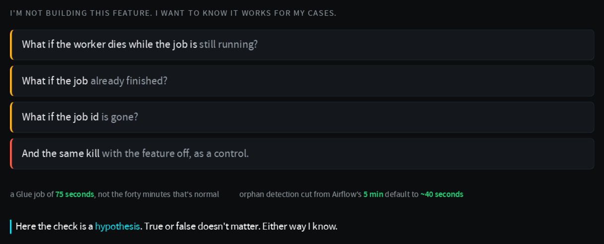
Simulate the effect
With the agent touching this much of the system, some of you may ask whether this is dangerous, and you’re right to. You could lose money, send the wrong message to the wrong people, or delete the wrong things. There’s a line between the decision and the real world, and you can put something in between: a fake notifier, read-only credentials, dry runs for tool calls, mock MCP servers, a proxy. Then you can loop fast without fear. Just do it for real once, so you know what real looks like.
And very important, and very simple: evals are not security. If something must never happen, make it impossible, with permissions and role-based access control. Everywhere else you can use judgment, but not there.
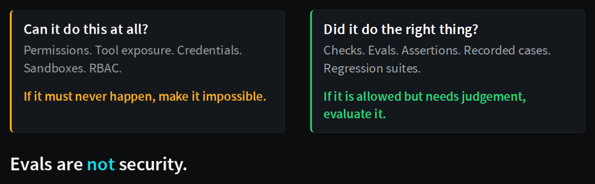
Traces
Going back to why the first version was so expensive: we had observability. In any AI work, persist your traces, because whatever result you get, the traces tell you how you got there. Here you can see the agent trying tools it had no access to, getting refused, and losing time on it.
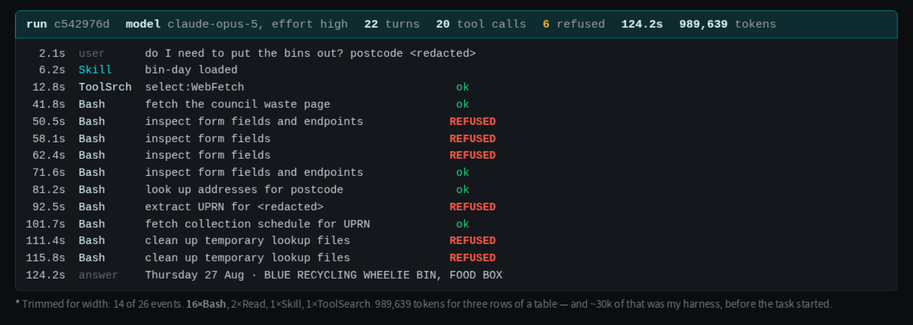
Traces also capture what your checks and tests missed. You can never predict everything reality will throw at you, and some of those traces become the next checks you add.
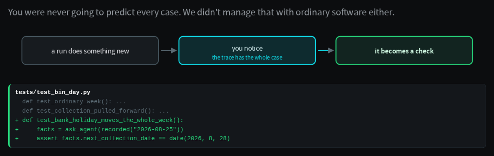
Make good checks easy to write
The one hard thing, I think, is the UX of evals. Writing proper evals is hard, a bit like explaining test-driven development to people who have never built software. We could take a page from skill builders, which ship an agent skill you talk to and it creates skills the right way, and have eval builders. In particular, I’ve experimented a lot with a qualifying exam for a domain, before you let an agent work in it.
A qualifying exam for a domain, before we let an agent work in it.
Takeaways
- Build executable checks for your loops, so you can delegate strongly.
- Find the right box: a task, a Dag, the whole Airflow image, or bigger.
- You may not need the inference at all: AI can be all around your system, with workflows that have none in them.
Evals are not security. If something must never happen, prevent it rather than evaluating it.